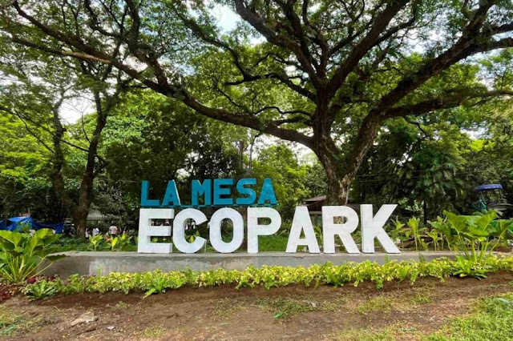

La Mesa Eco Park

About La Mesa Eco Park
La Mesa Eco Park is a large natural area in Quezon City where visitors can enjoy trees, plants, trails, and peaceful surroundings. It is a good place for people who want to spend time outdoors and enjoy nature.
I recommend La Mesa Eco Park because it offers a relaxing environment away from the busy city. Visitors can walk around the park, explore the trails, take pictures, and enjoy the natural surroundings.
The park is also a good place to visit with family and friends. Its green spaces and outdoor activities make it a nice destination for people who want to reconnect with nature.
La Mesa Eco Park Details
| Location | Quezon City, Philippines |
|---|---|
| Type | Ecological Park |
| Price Range | Varies depending on activities |
| Best Time to Visit | Morning or late afternoon |
| Recommended For | Walking, nature, photography, and outdoor activities |